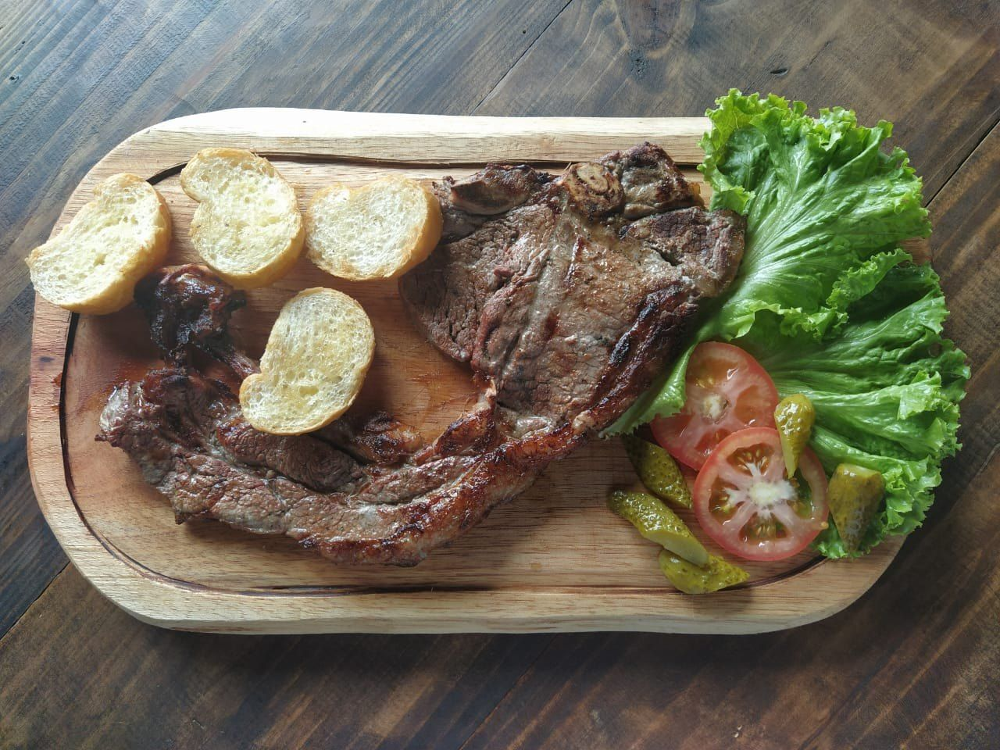
SábadoAlmoço à la carte
13h às 17h30
Com destaque para o filé duplo e o entrecôte, servidos com acompanhamentos.
Tradição de família, 4ª geração
Restaurante campestre e engenho movido a roda d'água no Alto Gasparinho, na Rota Villa D'Itália. Almoço à la carte no sábado, almoço da nona no fogão a lenha no domingo e café colonial em sábados marcados.
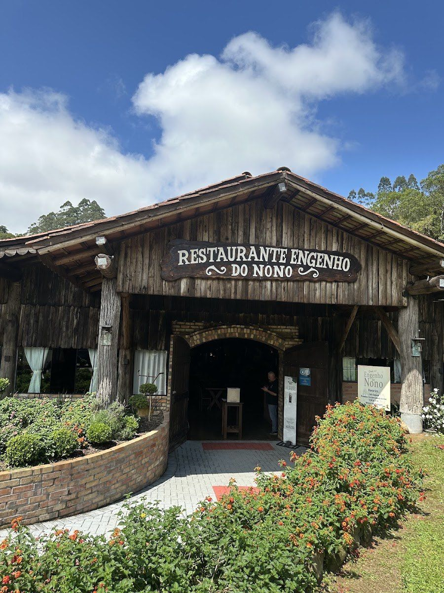
Reserva necessária
Sábado13h às 17h30
Com destaque para o filé duplo e o entrecôte, servidos com acompanhamentos.
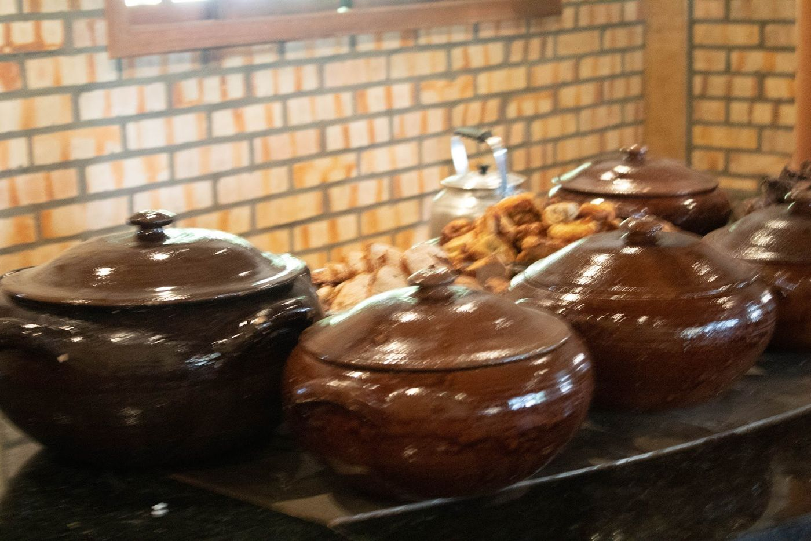
Domingo11h30 às 14h
Receitas tradicionais da nona, feitas pela família e servidas no fogão a lenha.
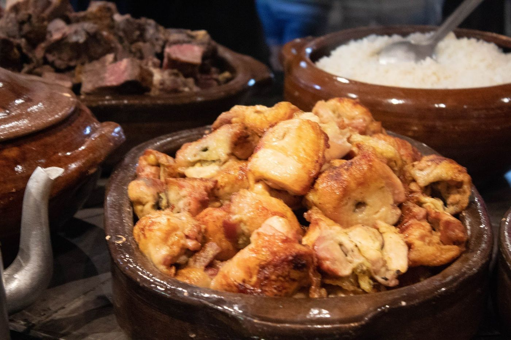
1º e 3º sábado*Data e horário pelo WhatsApp
Grande variedade de pães, bolos e doces artesanais. A ND+ fala em mais de 60 opções entre doces e salgados.
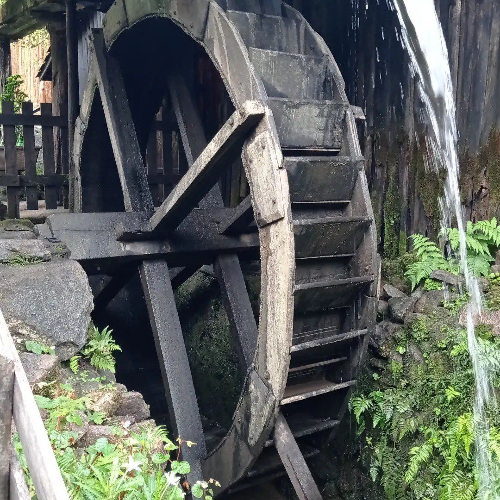
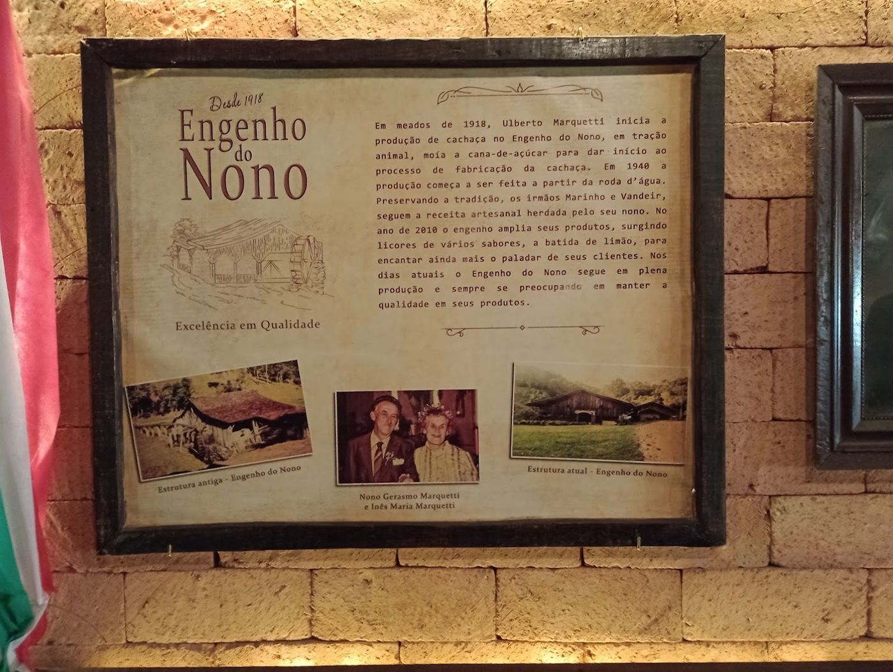
O imigrante italiano Ulberto Marquetti começa a fazer cachaça no engenho, com moenda de tração animal.
A moagem passa a ser movida por roda d'água. Até hoje, sem energia elétrica na moenda.
Sai a terceira roda da história, feita de itaúba.
Chegam os licores de vários sabores e a batida de limão.
Os irmãos Gilmar e Vandeir Cezar, com Jéssica e Angela, são a 4ª geração. A comida continua sendo feita pela família.
“Tenho comigo que, enquanto essa roda girar, a história da nossa família não vai morrer.”Gilmar Cezar, ao Jornal Metas (26/03/2026)
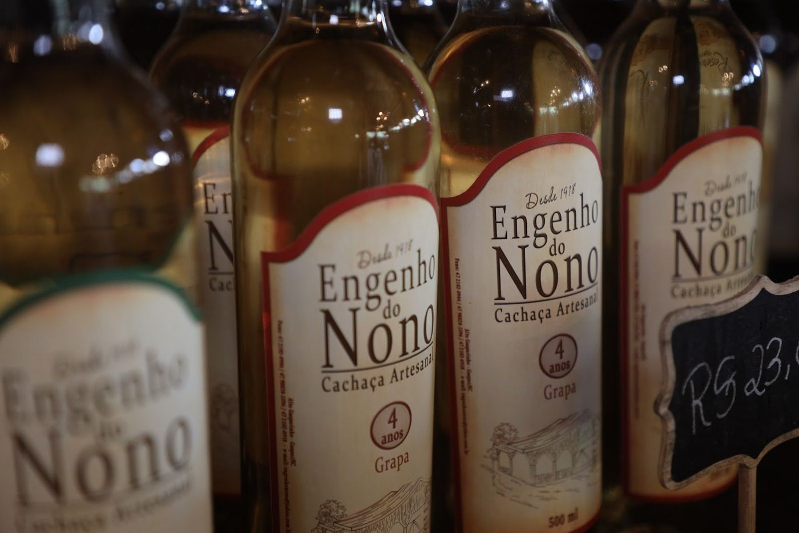
Loja junto ao restaurante. Dá para ver a roda e o engenho de perto (visita ao processo com agendamento).
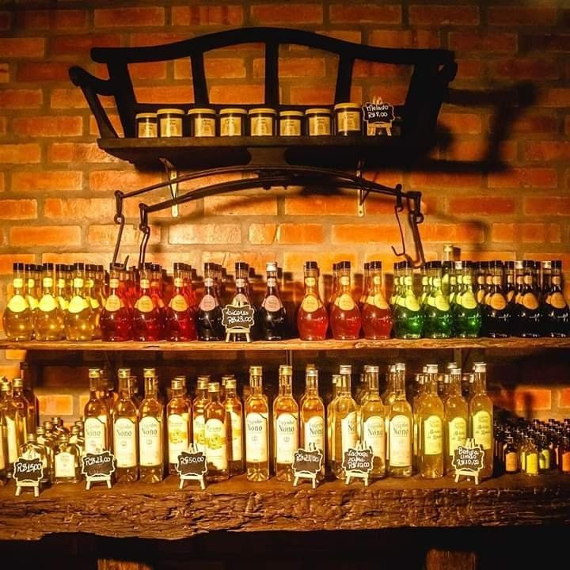
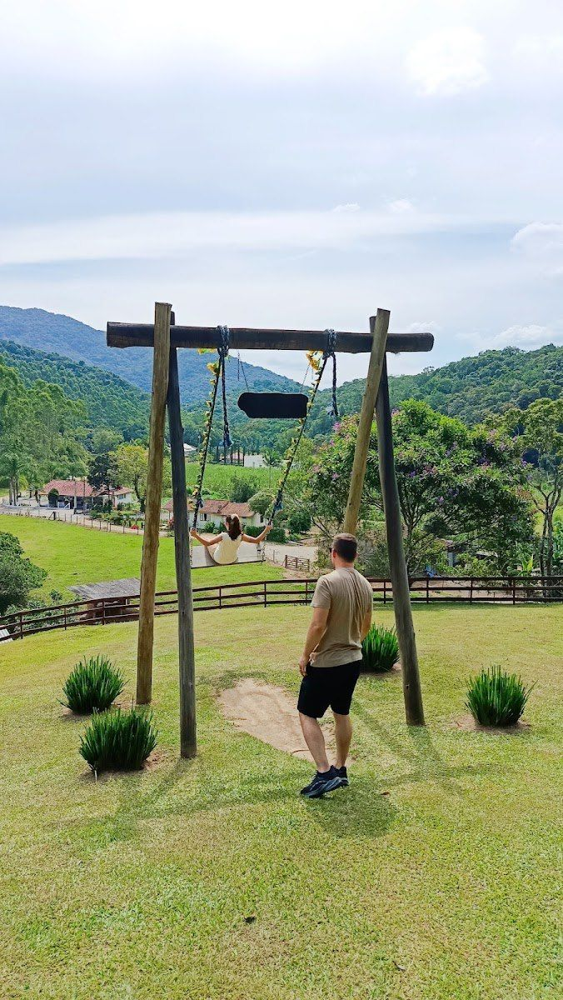
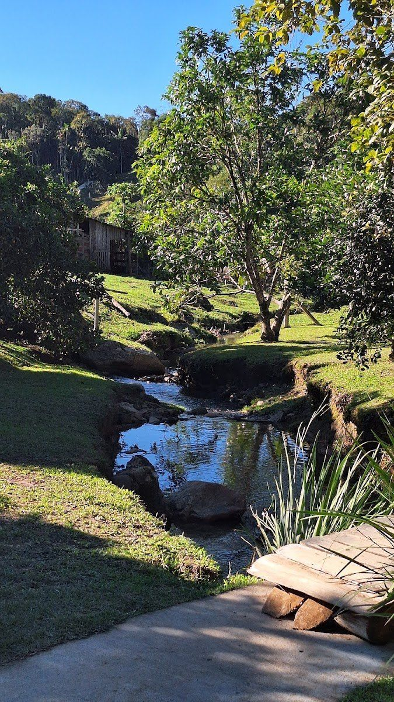
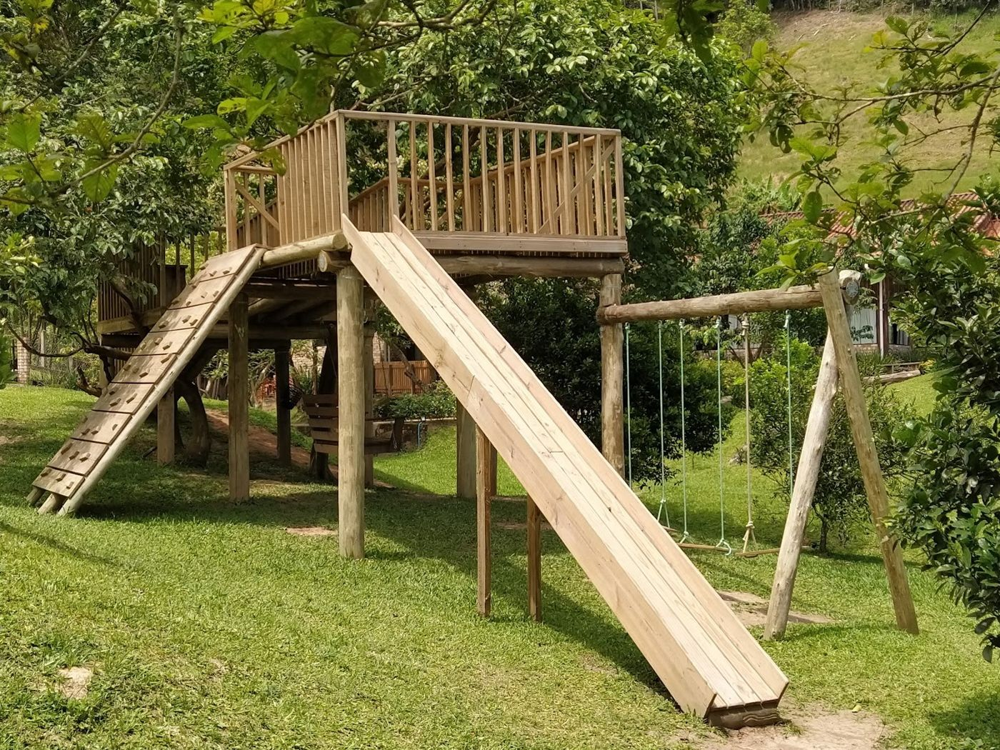
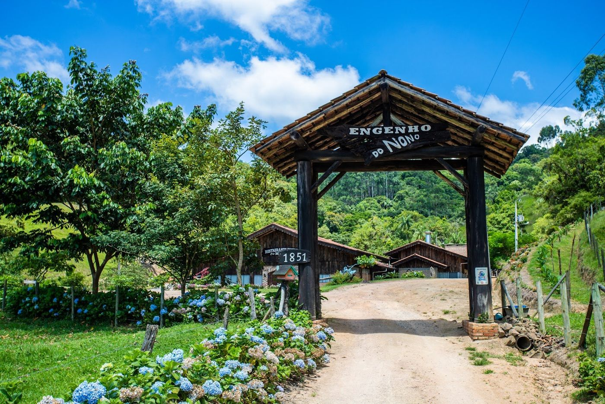
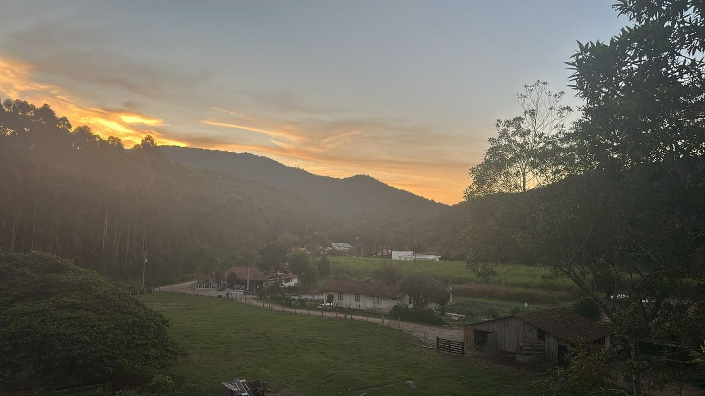
Os clientes lembram do riacho onde as crianças brincam, do balanço com vista, da gangorra, dos coelhos e do bode, e dos objetos antigos expostos no salão de madeira.
Comida maravilhosa e bem servida, atendimento de qualidade, nós piscavamos e mesa já estava limpa, lugar para levar a família toda
Memórias da minha infância ao ver algumas exposições que eles tem (...) O engenho é um charme a mais. Sem esquecer do espaço para as crianças
café colonial com muita comida e café a vontade. Diversos bolos, tortas salgadas, pão (...) Rio para as crianças brincarem tranquilamente, balanço, coelhos, bode
Rua Carlos Coradini, 1851 · Alto Gasparinho · Gaspar/SC
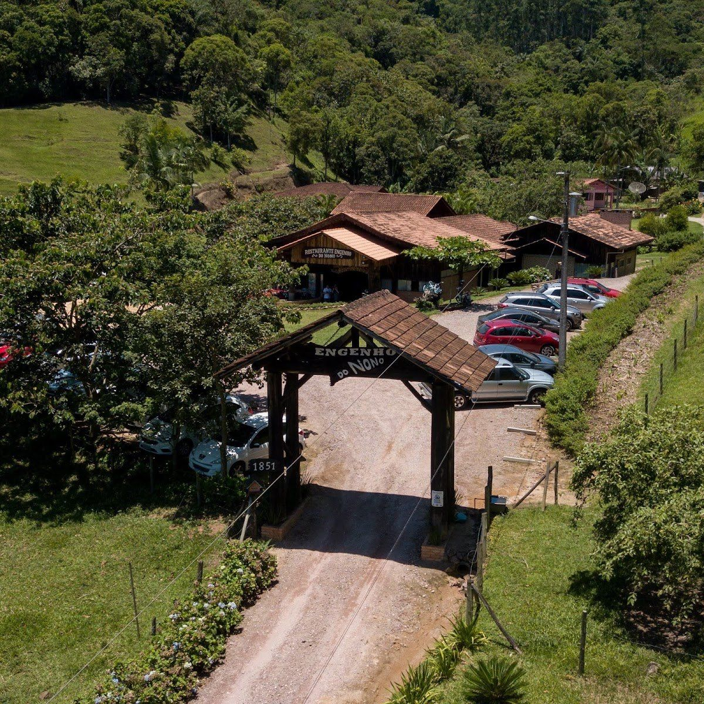